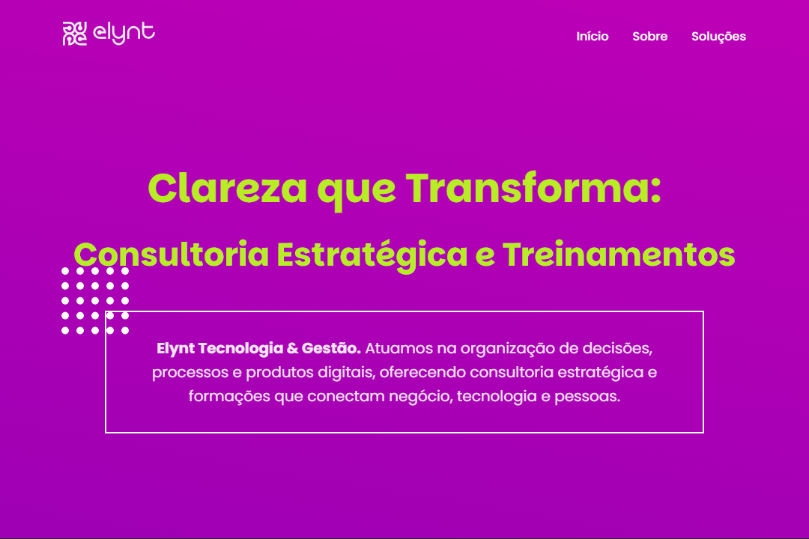
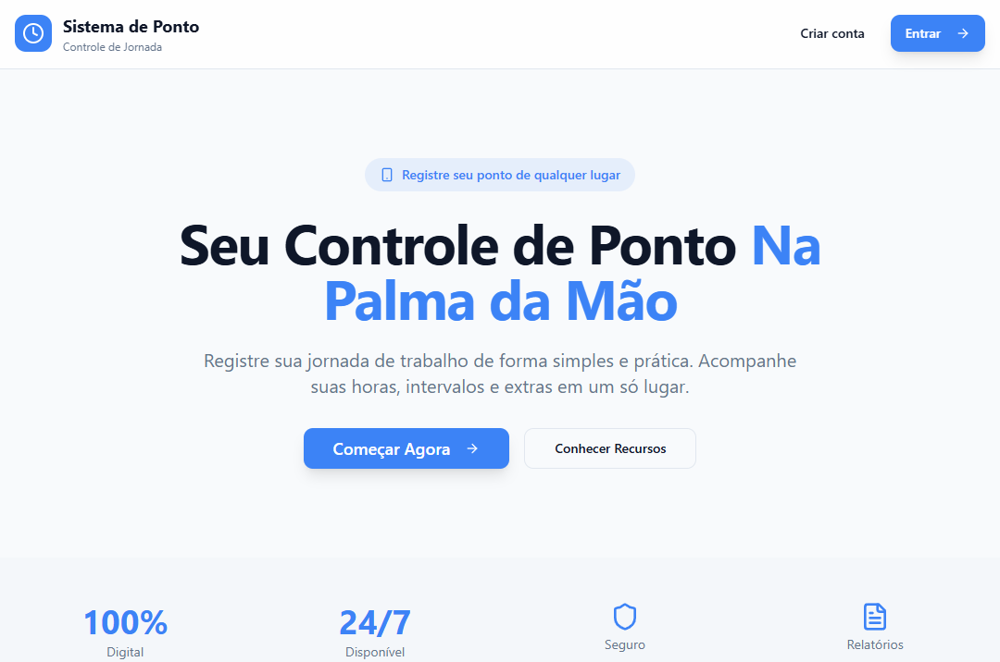
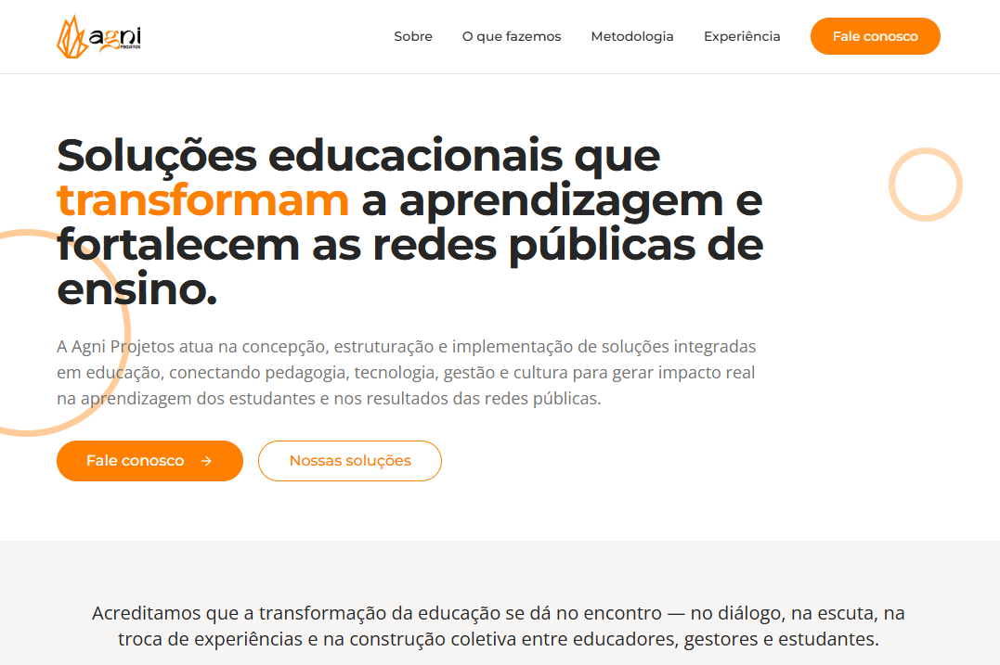
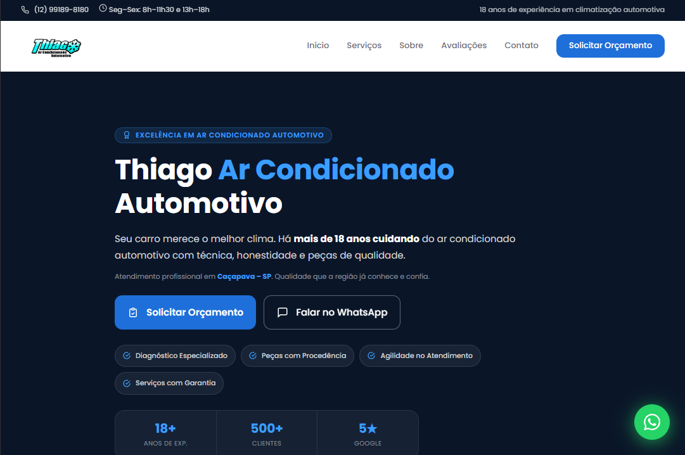
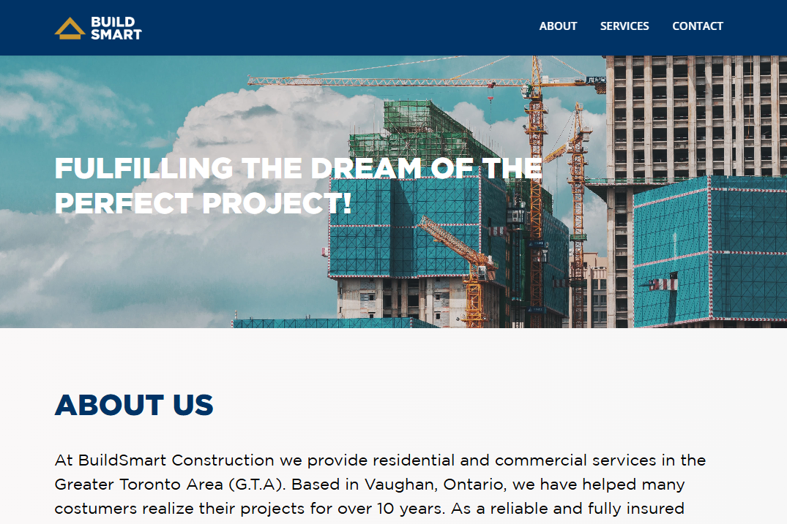
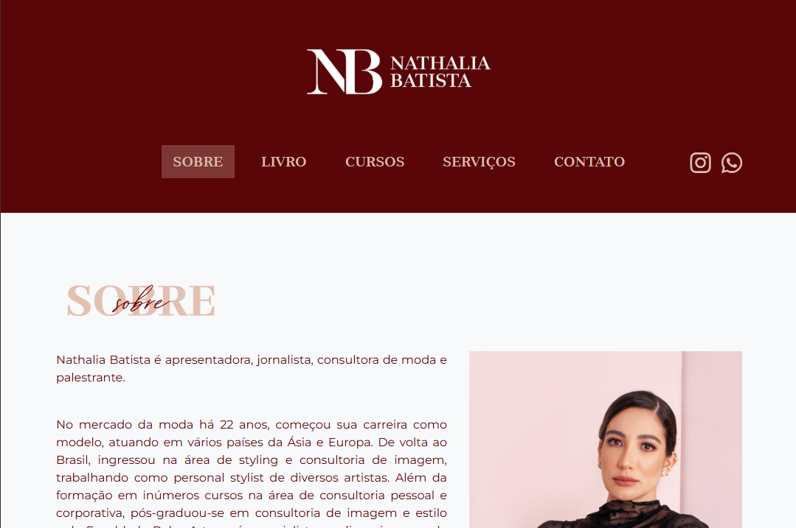

Atuo na interseção entre estratégia, tecnologia e experiência do usuário — transformando complexidade operacional em produto com clareza e valor real. Com base em Taubaté/SP.
Bons produtos nascem da combinação entre clareza estratégica, organização de processos e maturidade técnica.
Diagnóstico de produto, estruturação de backlog e definição funcional de iniciativas orientadas a impacto.
Acompanhamento do ciclo de desenvolvimento com foco em estabilidade, disponibilidade e experiência do usuário.
Facilitação entre times técnicos e de negócio, apoiando decisões orientadas a contexto e geração de valor.
Desde 2018 atuando com tecnologia. Da sustentação de sistemas à condução estratégica de produtos digitais.
Condução estratégica de demandas de produto, traduzindo objetivos de negócio em soluções digitais viáveis. Definição e priorização de backlog, estruturação de requisitos, validação de funcionalidades e facilitação entre áreas técnicas e de negócio.
Apoio a empresas EdTech na organização estratégica de produtos digitais e processos. Diagnóstico, estruturação de requisitos, backlog e capacitação de equipes em análise de requisitos, metodologias ágeis e fundamentos de banco de dados.
Garantia de qualidade de atendimento, criação de métricas e KPIs, política de suporte técnico, SLA, gestão de incidentes e supervisão técnica do ciclo de desenvolvimento incluindo testes e versionamento (Git/CI-CD).
Gestão de equipe, coordenação do atendimento ao cliente, manipulação de banco de dados SQL e desenvolvimento e manutenção com PHP, Javascript e ReactJS.
Suporte e atendimento, manipulação de SQL, relatórios com PHP e desenvolvimento de features front-end junto à equipe de desenvolvimento.
Organização e priorização de backlog em contexto consultivo, levantamento de requisitos, treinamentos e validação técnica de atividades de implantação.
Graduada em tecnologia, com MBA em gestão pela FGV e formação contínua em produto, liderança e agilidade.
Fundação Getúlio Vargas — FGV
2022 – 2024
FATEC Taubaté
2017 – 2020
Alura
Websites criados de forma autônoma, em freelances e projetos pessoais.





